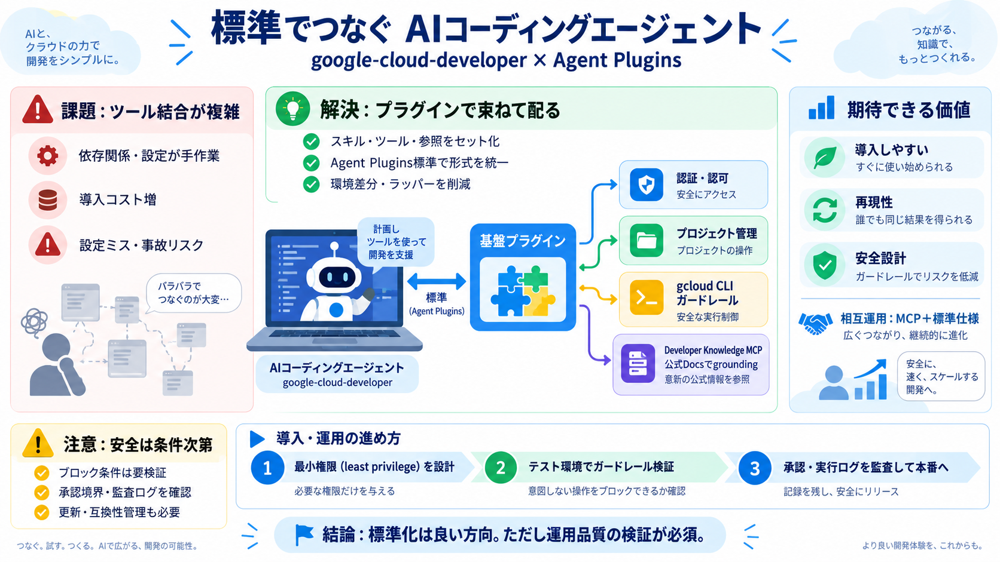

発生
依存関係/設定の手作業

AIコーディングエージェントがGoogle Cloudで作業するための「基盤プラグイン」を、Agent Plugins標準の文脈で整理します。
エージェントを実務に近づけるほど、ドメイン知識・ドキュメント・クラウド実行ツールなどの“組み合わせ管理”が増えて複雑になります。
プラグインは「関連機能をコヒーシブにまとめて配布できる単位」です。個別調整ではなく“標準的な投入”に寄せることで再現性を上げます。
プラグインが「Agent Plugins specification」という公開標準に従うと、異なるAIアシスタント環境でも同じ形式で扱いやすくなります。
（参考：英語 standard／日本語「標準」）
Google CloudはAIコーディングエージェント向けに新プラグインを公開し、その中核として google-cloud-developer を提示しています。
単なる検索ではなく、認証・認可、プロジェクト管理、gcloud CLI運用の前提（ガードレール）を含む“実務の土台”がまとめられています。
Developer Knowledge MCPサーバーの構成により、公式開発ドキュメントを根拠にしてエージェントへ情報を与える方針です。
プロジェクト立ち上げやアイデンティティ認証の場面で、環境を点検し、IAMベストプラクティスを考慮してリスクを避ける流れが示されています。
Antigravity CLI、Claude Code、Codex CLI といった環境でのインストール手順が例示されています。共通点としてGoogle Agent Skillsリポジトリから導入できます。
今回の狙いは、導入しやすさ・再現性・安全性の設計を、基盤プラグイン＋標準仕様で同時に押さえることです。
発表文ではガードレールやIAMベストプラクティス考慮が語られますが、どの操作を止めるか等の具体条件は追加情報が必要です。
プラグイン化で“調整の手作業”は減り得ますが、代わりにプラグイン側の更新・互換性・バージョン管理の負担が発生する可能性があります。
概念の利便性だけでなく、最小権限（least privilege）設計、承認フロー、テスト環境での検証、監査要件を先に固めるべきです。
このプラグインは“道具一式”で、ツール結合問題の軽減と標準準拠による導入一貫性を狙います。安全面は実効性の検証が必須です。
導入しやすさと安全性の設計を“標準”で進める点は強い。しかしガードレール条件・承認境界・監査ログなど、運用品質の評価材料は別途必要です。
まずはテスト環境で、最小権限・危険操作のブロック・自動実行と承認の線引き・ログ監査の可視性を確認してから本番へ進めます。
本デッキは、ユーザー提供テキスト内の要約（発表内容・FAQ・意見）を構造化したものです。固有のURLは元資料がないため未記載です。
No references found